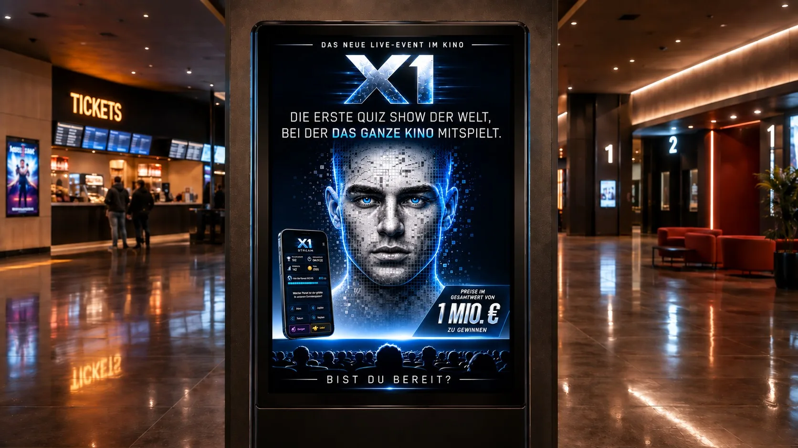

Das neue Live-Event im Kino
Das ganze Kino spielt mit.
X1 ist die erste Quiz Show der Welt, bei der der ganze Saal live mitspielt — auf der Leinwand und auf deinem Handy. Preise im Gesamtwert von 1 Mio. € zu gewinnen.
Scrollen
Die erste Quiz Show der Welt, bei der das ganze Kino mitspielt.
Runde 01 / 06 · So spielst du
Die Frage auf der Leinwand. Die Antwort in deiner Hand.
Auf der Leinwand stellt die Moderation die Frage — live, für den ganzen Saal. Du antwortest in der X1 Stream App auf deinem Handy. Der Countdown läuft für alle gleichzeitig, Punkte gibt es für die richtige Antwort und für deine Zeit.
Tipp eine Antwort an — Demo, ohne Wertung
Welcher Planet ist der größte in unserem Sonnensystem?
Runde 02 / 06 · Ratet den Satz
Der ganze Saal rät den Satz.
Bei „Ratet den Satz“ tippt jeder im Kino seinen Buchstaben. Die häufigsten Buchstaben fliegen live auf die Leinwand und füllen das Raster — Buchstabe für Buchstabe, bis der Satz steht.
Die Kamera fährt in die Leinwand.Der Übergang, der auf der ganzen Seite jeden Abschnittswechsel trägt.
Runde 03 / 06 · Erkennst du es schon?
Erkennst du es schon?
Das Bild auf der Leinwand kommt Stück für Stück ans Licht. Acht Antworten von A bis H — je früher du richtig tippst, desto besser. Der ganze Saal wird still, bis es der Erste erkennt.
Drei Spielmodi, eine Leinwand
Acht Antworten, A bis H.Je früher du richtig liegst, desto mehr Punkte.
Runde 04 / 06 · Gewinner der Quizrunde
Dein Name auf der Leinwand.
Nach jeder Runde feiert der ganze Saal die drei Besten — mit Avatar, Punkten und Zeit, groß auf der Leinwand.
Preise im Gesamtwert von
0 €zu gewinnen
Runde 05 / 06 · Gesamtpunktestand
Du spielst nie allein.
Der ganze Saal spielt gleichzeitig — und nach jeder Runde zeigt die Leinwand den Gesamtpunktestand: die Top 50 des Abends und deinen Platz darin.
Alle. Gleichzeitig. Live.Jeder Punkt im Saal ist ein Mitspieler, der gerade antwortet.

Runde 06 / 06 · Dein Kino
Bist du bereit?
X1 kommt in dein Kino. Wähl deine Stadt, sichere dir dein Ticket — und hol dir vorher die X1 Stream App aufs Handy.